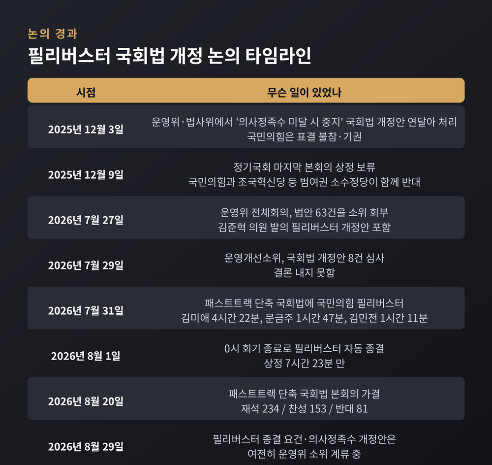
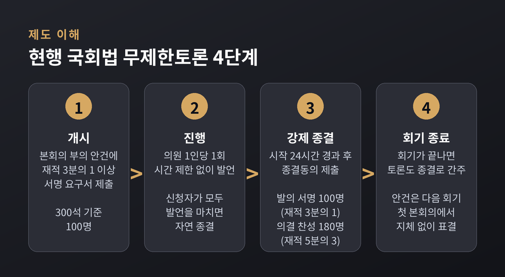
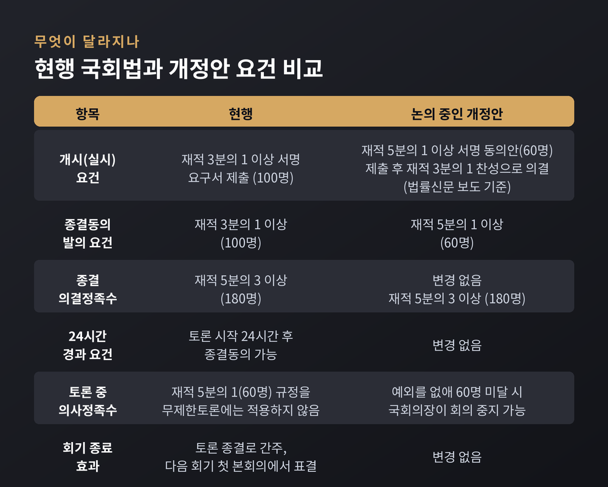
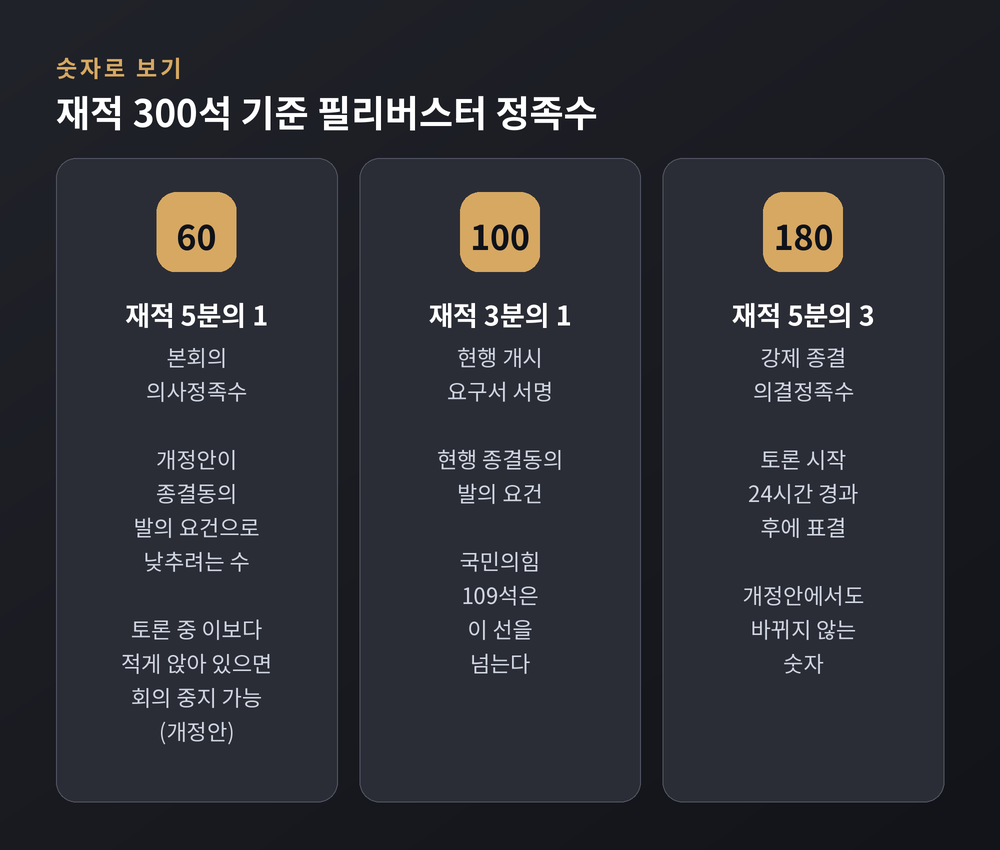
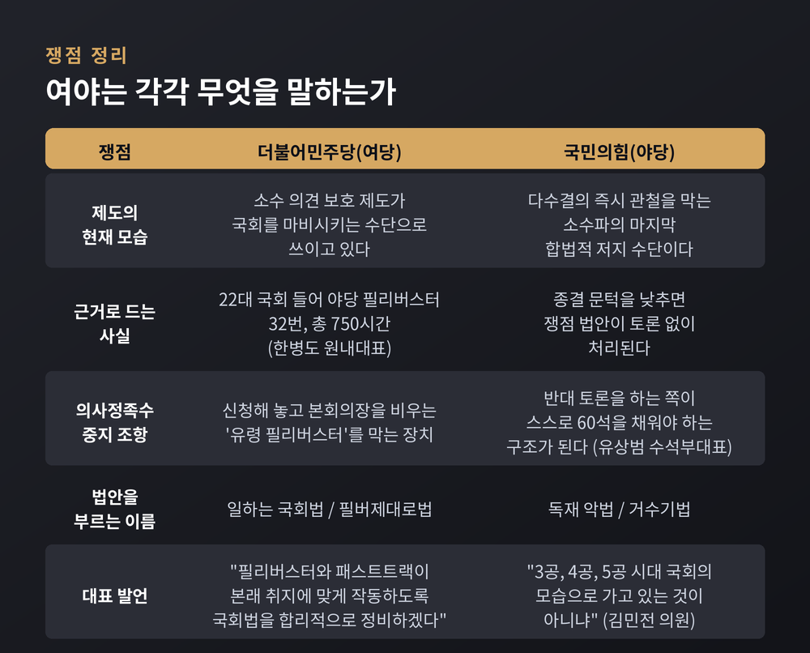

이번 글에서는 국회에서 논의 중인 필리버스터 제도 개편안을 정리해 보겠습니다. 종결 요건을 낮추고 의사정족수 중지 조항을 넣는 국회법 개정안이 무엇을 바꾸는지, 여야는 각각 무엇을 근거로 삼는지 절차 단위로 짚겠습니다. 판단은 읽는 분의 몫으로 남기겠습니다.
첫째, 논의 중인 국회법 개정안은 무제한토론 종결동의 발의 요건을 재적 3분의 1에서 5분의 1로 낮추고, 토론 중 본회의장 재석 의원이 재적 5분의 1(60명)에 못 미치면 국회의장이 회의를 중지할 수 있게 합니다.
둘째, 이 법안은 2026년 8월 29일 현재 국회 운영위원회 소위원회에 계류 중입니다. 통과되지 않았습니다.
셋째, 8월 20일 본회의를 통과한 국회법 개정안은 패스트트랙 심사기간 단축(330일→90일)으로, 이 글이 다루는 필리버스터 개정안과는 다른 법안입니다.
7월 27일이 시작점입니다. 국회 운영위원회는 이날 전체회의에서 법안 63건을 운영개선소위원회로 넘겼습니다. 그 안에 김준혁 더불어민주당 의원이 대표발의한 국회법 개정안이 들어 있었습니다. 필리버스터 종결을 지금보다 쉽게 만드는 내용입니다.
같은 날 운영위원장을 겸한 한병도 민주당 대표 직무대행 겸 원내대표는 최고위원회의에서 개정 의지를 밝혔습니다. 상임위원장이 정당한 사유 없이 회의를 열지 않으면 교체할 수 있게 하는 김태년 의원 발의 법안도 함께 소위로 갔습니다.
이틀 뒤인 7월 29일, 운영개선소위는 국회법 개정안 8건을 심사했습니다. 결론은 나지 않았습니다.
그사이 본회의장에서는 다른 국회법 개정안을 놓고 실제 필리버스터가 벌어졌습니다. 7월 31일 오후 패스트트랙 심사기간을 줄이는 개정안이 상정되자 국민의힘이 무제한토론에 들어갔습니다. 김미애 의원이 4시간 22분, 문금주 민주당 의원이 찬성토론으로 1시간 47분, 김민전 의원이 1시간 11분 발언했습니다. 그리고 8월 1일 0시, 7월 임시국회 회기가 끝나면서 토론은 상정 7시간 23분 만에 자동 종결됐습니다.
해당 법안은 8월 20일 본회의에서 재석 234명 중 찬성 153명, 반대 81명으로 가결됐습니다. 필리버스터 개정안은 아직 그 문턱 앞에 있습니다.

제도를 먼저 봐야 무엇이 바뀌는지 보입니다. 국회법 제106조의2가 규정하는 무제한토론의 흐름은 이렇습니다.
1단계, 개시. 본회의에 부의된 안건에 대해 재적의원 3분의 1 이상이 서명한 요구서를 의장에게 내면 무제한토론이 실시됩니다. 재적 300석 기준 100명입니다.
2단계, 진행. 의원 한 사람이 1회에 한해 시간 제한 없이 발언합니다. 신청자가 모두 발언을 마치면 자연 종결됩니다.
3단계, 강제 종결. 토론 시작 후 24시간이 지나면 종결동의를 낼 수 있습니다. 발의에 필요한 서명은 재적 3분의 1 이상, 의결에 필요한 찬성은 재적 5분의 3 이상입니다. 300석 기준으로 각각 100명과 180명입니다.
4단계, 회기 종료. 무제한토론 중 회기가 끝나면 토론은 종결된 것으로 봅니다. 안건은 다음 회기에 지체 없이 표결합니다. 7월 31일 필리버스터가 자정에 멈춘 이유가 여기 있습니다.
여기에 한 가지 예외가 더 있습니다. 본회의 의사정족수는 재적 5분의 1, 곧 60명입니다. 평소에는 이보다 적게 앉아 있으면 의장이 회의를 중지하거나 산회할 수 있습니다. 그러나 현행법은 무제한토론 중에는 이 규정을 적용하지 않습니다. 본회의장이 거의 비어 있어도 토론은 계속됩니다.

개정안은 이 절차 가운데 세 곳을 건드립니다.
첫째, 종결동의 발의 요건. 재적 3분의 1(100명)에서 재적 5분의 1(60명)로 낮춥니다. 한 가지는 짚어야 합니다. 종결을 의결하는 정족수 재적 5분의 3, 180명은 그대로입니다. 바뀌는 것은 종결동의를 제출하는 데 필요한 서명 수입니다.
둘째, 의사정족수 중지 조항. 무제한토론 중에도 재석 의원이 60명에 미달하면 국회의장이 회의를 중지할 수 있게 합니다. 지금까지 두었던 예외를 없애는 셈입니다. 2025년 12월 논의된 안에는 교섭단체 대표의원이 정족수 충족을 요청하면 의장이 회의 중지를 선포하도록 하는 절차, 의장이 사회를 볼 수 없을 때 지정한 의원이 회의를 진행하게 하는 조항도 담겼습니다.
셋째, 개시 절차. 법률신문이 소위 심사자료를 확인해 보도한 바에 따르면, 개정안은 무제한토론 실시 방식도 바꿉니다. '재적 3분의 1 서명 요구서 제출'에서 '재적 5분의 1 서명 동의안 제출 후 재적 3분의 1 찬성으로 의결'로 바뀝니다. 개시 서명 문턱은 낮아지지만 표결이라는 관문이 새로 생깁니다. 다만 소위 심사 단계라 최종 조문은 달라질 수 있습니다.

숫자로 보면 이 개정의 무게가 드러납니다.
국민의힘은 109석입니다. 재적 3분의 1인 100명은 넘고, 5분의 3인 180명에는 한참 못 미칩니다. 지금 구조에서 국민의힘은 단독으로 필리버스터를 개시할 수 있고, 여당은 단독으로 종결시키기 어렵습니다. 그래서 회기 종료라는 우회로가 실제로 쓰였습니다.
의사정족수 중지 조항은 성격이 다릅니다. 종결 표결과 무관하게, 본회의장에 60명이 앉아 있지 않으면 토론을 멈출 수 있게 하는 장치이기 때문입니다. 새벽 시간대 무제한토론에서 의석을 60석 이상 유지하는 일이 어느 쪽에 더 부담인지가 실제 효과를 가릅니다.

민주당은 제도가 본래 취지에서 벗어났다고 봅니다.
한병도 원내대표는 7월 27일 "22대 국회 들어 국민의힘이 남발한 필리버스터만 무려 32번으로 총 750시간에 달한다"고 밝혔습니다. 이어 "소수의 의견을 보호하기 위해 마련한 제도가 국회를 마비시키고 민생 입법을 지연시키는 수단으로 악용되고 있다"고 했습니다. 그가 내건 표현은 "일하는 국회"입니다.
의사정족수 조항의 직접적 계기는 이른바 '노쇼' 문제였습니다. 2025년 11월 민주당 원내지도부는 "국민의힘이 필리버스터를 신청해 놓고 본회의장을 비워두는 비효율을 더 두고 볼 수 없다"고 했습니다. 당시 김병기 원내대표는 이를 "유령 필리버스터"라 불렀습니다.
7월 31일 찬성토론에 나선 문금주 의원의 말도 같은 결입니다. "지난 12년 동안 국회선진화법이라는 이름 뒤에 숨어 국회를 만성적인 입법 마비 상태로 몰아넣었던 교착의 사슬을 끊어내는 역사적인 개혁안"이라고 했습니다.
국민의힘은 소수파의 마지막 수단을 없애는 일이라고 반박합니다.
정점식 원내대표는 7월 31일 "국회를 민주당의 거수기로 만들겠다는 독재 악법"이라고 했습니다.
의사정족수 조항을 겨눈 반론은 좀 더 구체적입니다. 유상범 원내수석부대표는 운영위에서 "토론할 때 반대 의견을 주장하면 들어야 하는 사람은 찬성할 사람들인데, 너희가 주장했으니 주장한 사람이 들으라는 건 말이 안 된다"고 했습니다. 소수당이 자기 토론을 이어가기 위해 스스로 60석을 채워야 하는 구조가 된다는 지적입니다.
법사위에서 주진우 의원은 "한마디로 필리버스터를 쉽게 중단하고, 필리버스터를 못 하게 하는 법안"이라고 했고, 나경원 의원은 처리 속도를 문제 삼았습니다. 7월 31일 반대토론에 선 김민전 의원은 "3공, 4공, 5공 시대 국회의 모습으로 가고 있는 것이 아니냐"고 물었습니다.

정치인 발언만으로는 판단이 어렵습니다. 그래서 국회 사무처 전문위원의 검토 의견이 중요합니다.
법률신문이 확인한 운영개선소위 심사자료에서 운영위 수석전문위원은 회의중지 조항에 대해 이렇게 적었습니다. "무제한 토론이 내실 있게 진행되도록 일정 수 이상의 참여를 확보하려는 개정 취지와, 토론이 장시간 이어지는 경우 의사정족수를 계속 충족시키기 쉽지 않다는 현실적인 측면을 종합적으로 결정할 필요가 있다."
찬성도 반대도 아닙니다. 취지는 인정하되 현실을 함께 보라는 주문입니다.
개시 절차 변경에 대해서는 좀 더 분명한 지적을 내놨습니다. 실시동의 의결정족수를 재적 3분의 1 찬성으로 하면 "찬성보다 반대가 많은 경우에도 가결이 가능해 헌법상 다수결 원리 및 기존 입법례와 부합하지 않는 점을 고려할 필요가 있다"고 했습니다.
이 논쟁은 처음이 아닙니다.
민주당은 2025년 12월 3일 운영위와 법사위에서 같은 취지의 국회법 개정안을 하루 만에 연달아 처리했습니다. 법사위에서는 기습 상정과 거수 표결이 있었고, 국민의힘은 표결에 불참하거나 기권했습니다. 12월 9일 정기국회 마지막 본회의에서 처리한다는 계획이었습니다.
그런데 상정되지 않았습니다. 한정애 정책위의장은 하루 전 "비쟁점 법안 위주로 처리할 생각"이라고 밝혔습니다.
이유가 눈여겨볼 대목입니다. 국민의힘뿐 아니라 조국혁신당 등 범여권 소수정당도 "필리버스터를 위축시킬 수 있다", "소수 의견을 보호하는 제도의 취지에 반한다"며 반대했습니다. 여야 대립으로만 볼 수 없는 사안이라는 뜻입니다.
필리버스터는 소수파가 합법적으로 의사진행을 늦춰 다수결의 즉시 관철을 막는 장치입니다. 태생부터 다수결 원리와 충돌하도록 설계된 제도인 셈입니다.
한국 국회에서는 1973년에 폐지됐다가 2012년 5월 국회법 개정, 이른바 국회선진화법으로 약 40년 만에 부활했습니다. 몸싸움 국회를 끝내자는 취지였습니다. 이때 다수당에게는 패스트트랙을, 소수당에게는 필리버스터를 각각 쥐여 주었습니다. 균형 설계였습니다. 이번 논쟁이 두 제도를 나란히 건드리고 있다는 점은 그래서 의미가 있습니다.
부활 이후 가장 널리 알려진 사례는 2016년 2~3월 테러방지법 반대 필리버스터입니다. 38명이 나서 총 192시간 27분을 채웠고, 종전 캐나다 기록 58시간을 크게 넘어선 세계 최장 기록이 됐습니다. 그때 필리버스터를 이끈 쪽은 야당이던 더불어민주당이었습니다.
예전엔 지금의 여당이 이 제도의 최대 수혜자였습니다. 지금은 개편을 추진하는 쪽입니다. 어느 쪽을 탓하려는 말이 아니라, 제도의 유불리는 의석 구조에 따라 뒤집힌다는 사실을 확인하는 지점입니다.
미국 상원도 같은 문제를 겪었습니다.
상원은 토론 종결에 100명 중 60명, 곧 5분의 3의 찬성을 요구합니다. 한국의 재적 5분의 3 요건과 비율이 같습니다.
2013년 11월 다수당이던 민주당은 이른바 '핵 옵션'을 써서 52 대 48로 규칙을 바꿨습니다. 대법관을 제외한 인준안의 종결 요건을 60표에서 단순 과반으로 낮춘 것입니다. 2017년 4월에는 다수당이 된 공화당이 같은 방식으로 대법관 인준까지 확대했습니다.
다만 일반 법안에 대한 60표 요건은 지금도 남아 있습니다. 한국 개정안이 종결 의결정족수 180명을 손대지 않는 것과 구조가 비슷합니다.
미국 사례가 알려주는 것은 간단합니다. 다수당이 문턱을 낮추는 일은 다른 나라에도 있었고, 그 결과는 정권이 바뀐 뒤 되돌아왔습니다.
세 가지를 보시면 됩니다.
하나, 소위 심사 결과입니다. 7월 29일 심사에서 결론이 나지 않았습니다. 조문이 어떻게 다듬어지는지, 특히 전문위원이 문제 삼은 개시 절차 조항이 남는지가 관건입니다.
둘, 소수정당의 태도입니다. 2025년 12월 법안을 멈춰 세운 것은 야당이 아니라 범여권 소수정당의 반대였습니다. 이들의 입장이 그대로인지가 처리 여부를 가릅니다.
셋, 회기 운영 방식입니다. 7월 임시국회는 회기를 8월 4일에서 8월 1일로 줄이는 방식으로 필리버스터를 자동 종결시켰습니다. 종결 요건을 고치지 않아도 회기 조정으로 같은 결과를 낼 수 있다면, 개정의 실익이 어디에 있는지도 함께 따져볼 문제입니다.
정리하면 이렇습니다.
이 논쟁의 핵심은 어느 당이 옳은가가 아니라, "다수의 결정 속도와 소수의 발언 시간 가운데 무엇을 얼마나 지킬 것인가"라는 오래된 물음입니다. 국회선진화법이 2012년에 내놓았던 답을 14년 만에 다시 묻고 있는 셈입니다.
제도의 유불리는 언제든 뒤집힙니다. 지금 이 조항이 자기 편에 유리한지만 따진다면, 답은 몇 년 뒤 반대편에서 돌아올 것입니다. 그렇다면 어떤 기준으로 봐야 하느냐고 물으신다면, 저는 의석수가 바뀌어도 견딜 수 있는 규칙인지를 먼저 보겠다고 답하겠습니다.